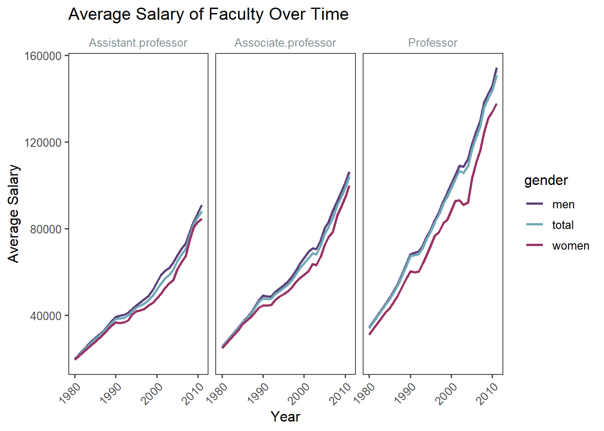

# Load necessary libraries
suppressMessages(suppressWarnings(library(stringr)))
suppressMessages(suppressWarnings(library(tidyr)))
suppressMessages(suppressWarnings(library(ggplot2)))
suppressMessages(suppressWarnings(library(dplyr)))
suppressMessages(suppressWarnings(library(ggthemes)))
suppressMessages(suppressWarnings(library(hrbrthemes)))
# Read your data
faculty_data <- read.csv("F.Sal.80.csv")
# Assign column names to a new object
colnames_cleaned <- colnames(faculty_data)
# Clean the column names using a regex to account for both "faculty" and "staff"
colnames_cleaned <- str_replace_all(colnames_cleaned,
"^Number\\.of\\.full\\.time\\.instructional\\.(faculty|staff)\\.(men|women|total)\\.\\.SAL(\\d{4})_.*\\.(Professor|Associate\\.professor|Assistant\\.professor).*",
"Number_\\3_\\4_\\2") # Format: "Number_Year_Rank_Gender"
# Clean the column names using a regex to account for both "faculty" and "staff"
colnames_cleaned <- str_replace_all(colnames_cleaned,
"^Average\\.salary\\.of\\.full\\.time\\.instructional\\.(faculty|staff)\\.(men|women|total)\\.\\.SAL(\\d{4})_.*\\.(Professor|Associate\\.professor|Assistant\\.professor).*",
"Average_\\3_\\4_\\2") # Format: "Average_Year_Rank_Gender"
# Assign the cleaned column names back to the data frame
colnames(faculty_data) <- colnames_cleaned
long_data <- faculty_data %>%
pivot_longer(cols = starts_with("Average"),
names_to = c("year", "rank", "gender"),
names_pattern = "Average_(\\d{4})_(.*)_(.*)",
values_to = "salary") %>%
mutate(year = as.integer(year))
library(ggplot2)
library(ggthemes)
ggplot(long_data, aes(x = year, y = salary, color = gender, group = gender)) +
geom_line(size=1) +
labs(
title = "Average Salary of Faculty Over Time",
x = "Year",
y = "Average Salary"
) +
facet_wrap(~rank) + # Facet by rank (Professor, Associate Professor, Assistant Professor)
scale_color_manual(values = c(
"women" = "#993366", # Soft red/pink for women
"men" = "#5d437c", # Muted green/gray for men
"total" = "#6fa9b8" # Complementary soft teal for total
)) +
theme_few() +
theme(
axis.text.x = element_text(angle = 45, hjust = 1), # Rotate x-axis labels for readability
strip.text = element_text(color = "#839496") # Apply a clean color for facet labels (optional)
) # Rotate x-axis labels to make them more readable
long_count <- faculty_data %>%
pivot_longer(cols = starts_with("Number"),
names_to = c("year", "rank", "gender"),
names_pattern = "Number_(\\d{4})_(.*)_(.*)",
values_to = "n") %>%
mutate(year = as.integer(year))
long_combined <- left_join(long_data, long_count, by = c("year", "rank", "gender"))
library(plotly)
Attaching package: 'plotly'The following object is masked from 'package:ggplot2':
last_plotThe following object is masked from 'package:stats':
filterThe following object is masked from 'package:graphics':
layoutp <- ggplot(long_combined, aes(x = year, y = salary, color = gender, group = gender,
text = paste("Year:", year,
"<br>Salary:", salary,
"<br>n:", n))) +
geom_line(size = 1) +
geom_point() +
facet_wrap(~rank) +
scale_color_manual(values = c(
"women" = "#993366",
"men" = "#5d437c",
"total" = "#6fa9b8"
)) +
theme_few()
ggplotly(p, tooltip = "text")# Salary plot (interactive)
p_salary <- ggplot(long_combined, aes(x = year, y = salary, color = gender, group = gender,
text = paste("Year:", year,
"<br>Salary:", salary,
"<br>n:", n))) +
geom_line(size = 1) +
geom_point() +
facet_wrap(~rank) +
labs(title = "Average Salary Over Time", x = "Year", y = "Salary") +
scale_color_manual(values = c("women" = "#993366", "men" = "#5d437c", "total" = "#6fa9b8")) +
theme_few()
library(plotly)
# Create a new dataframe for just the faculty count by gender
gender_count_data <- long_combined %>%
filter(gender %in% c("women", "men")) %>%
select(year, rank, gender, n)
# Create the interactive plot for the number of men vs women
gender_count_plot <- ggplot(gender_count_data, aes(x = year, y = n, color = gender, group = gender,
text = paste("Year:", year,
"<br>Count:", n))) +
geom_line(size = 1) +
geom_point() +
facet_wrap(~rank) +
labs(title = "Number of Faculty by Gender Over Time", x = "Year", y = "Faculty Count") +
scale_color_manual(values = c("women" = "#993366", "men" = "#5d437c")) +
theme_few()
# Convert the ggplot to plotly
interactive_gender_plot <- ggplotly(gender_count_plot, tooltip = "text")
# Show the interactive plot
interactive_gender_plot